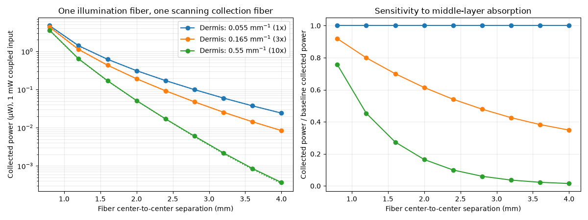

Note
Go to the end to download the full example code.
Two-fiber reflectance and dermal absorption#
Keep one illumination fiber fixed on three-layer skin and move a collection fiber along the surface. Compare the collected power at 850 nm for baseline, 3x, and 10x dermal absorption, leaving all other optical properties unchanged. The last case makes the middle layer more absorbing than either adjacent layer. These absorption multipliers are a sensitivity experiment, not tissue diagnoses.
The baseline is MomentRT’s illustrative Shimojo three-layer preset, based on one ex vivo skin dataset. Source power is diffuse power already coupled into the tissue. P1 transport and Lambertian detector acceptance approximate this contact probe; fiber propagation, specular reflection, and internal index jumps are omitted. Short separations especially need a radiative-transfer or Monte Carlo comparison before interpreting this as a physical instrument prediction.
References#
Shimojo, Y. et al. (2020), Journal of Biomedical Optics, 25(4), 045002. https://doi.org/10.1117/1.JBO.25.4.045002
import copy
import matplotlib.pyplot as plt
import numpy as np
import MomentRT
from MomentRT.models.skin import ShimojoThreeLayer850nm
ureg = MomentRT.ureg
Define the tissue and the two-fiber scan#
Epidermis is 0.2 mm thick and dermis is 1.5 mm thick. Hypodermis fills the remaining depth, including the background below the preset’s named layers. All layers have refractive index 1.4; zero-reflectance Robin boundaries are an explicit matched-index approximation, including the upper contact face. A 0.6 mm fiber diameter and a 30 degree acceptance half-angle are illustrative. Each aperture below is an alternative position of ONE passive collection fiber. Evaluating them together reuses the same field; it does not model an array of absorbing fibers or remove collected light from the boundary field.
baseline_sample = ShimojoThreeLayer850nm(
origin=(-5, -4, 0) * ureg.mm,
size=(12, 8, 6) * ureg.mm,
)
source = MomentRT.SurfaceSource.on_face(
sample=baseline_sample,
face="z_min",
coordinates=(-2, 0) * ureg.mm,
radius=0.3 * ureg.mm,
wavelength=850 * ureg.nm,
optical_power=1 * ureg.mW,
name="Illumination fiber",
)
separations = np.linspace(0.8, 4.0, 9) * ureg.mm
detectors = {
f"position_{index}": MomentRT.SurfaceDetector.on_face(
sample=baseline_sample,
face="z_min",
coordinates=np.array([-2 + separation.to("mm").magnitude, 0]) * ureg.mm,
radius=0.3 * ureg.mm,
orientation="outward_normal",
acceptance_angle=30 * ureg.degree,
name=f"Collection at {separation.to('mm').magnitude:.1f} mm",
)
for index, separation in enumerate(separations)
}
solver = MomentRT.P1(
boundaries=MomentRT.Boundaries.uniform(
condition=MomentRT.RobinBoundary(effective_reflectance=0),
),
)
Refine the contacts and compare absorption levels#
Use conforming tetrahedra to resolve layer interfaces. Refine the epidermis and every scan position on the SAME mesh for all absorption cases at a given level. The three meshes check spatial sensitivity without changing geometry, source power, aperture radius, or angular acceptance.
absorption_multipliers = (1, 3, 10)
mesh_resolutions_mm = (0.65, 0.5, 0.4)
contact_resolutions_mm = (0.15, 0.10, 0.075)
collected_power_uw = np.empty((3, 3, len(detectors)))
source_area_ratios = np.empty(3)
detector_area_ratios = np.empty((3, len(detectors)))
for level, (bulk_resolution, contact_resolution) in enumerate(
zip(mesh_resolutions_mm, contact_resolutions_mm)
):
mesh = MomentRT.TetrahedralMesh.from_sample(
sample=baseline_sample,
resolution=bulk_resolution * ureg.mm,
)
mesh.refine_region(
name="Epidermis",
resolution=contact_resolution * ureg.mm,
)
mesh.refine_near(
objects=[source, *detectors.values()],
resolution=contact_resolution * ureg.mm,
distance=0.3 * ureg.mm,
)
for case, multiplier in enumerate(absorption_multipliers):
sample = copy.deepcopy(baseline_sample)
dermis = next(layer for layer in sample.structures if layer.name == "Dermis")
baseline_dermis = dermis.material
dermis.material = MomentRT.Material(
absorption=multiplier * baseline_dermis.absorption,
reduced_scattering=baseline_dermis.reduced_scattering,
refractive_index=baseline_dermis.refractive_index,
anisotropy=baseline_dermis.anisotropy,
phase_function=baseline_dermis.phase_function,
)
simulation = MomentRT.Simulation(
medium=sample,
source=source,
mesh=mesh,
solver=solver,
detectors=detectors,
)
result = simulation.run()
collected_power_uw[level, case] = [
result.detector_power[name].to("uW").magnitude for name in detectors
]
source_area_ratios[level] = (
(result.source_sampled_area / result.source_geometric_area).to("").magnitude
)
detector_area_ratios[level] = [
(measurement.sampled_area / measurement.geometric_area).to("").magnitude
for measurement in result.detectors.values()
]
residual_fraction = (
(result.energy_balance["residual_power"] / source.optical_power)
.to("")
.magnitude
)
print(
f"Mesh {level + 1}, dermal absorption {dermis.material.absorption:~P}: "
f"{len(mesh.tetrahedra)} tetrahedra, "
f"energy residual / input = {residual_fraction:.2e}, "
f"minimum fluence = {result.fluence.values.min().to('W/m^2'):~P}"
)
Mesh 1, dermal absorption 0.055 1/mm: 66567 tetrahedra, energy residual / input = -4.34e-16, minimum fluence = 0.00019216384890993502 W/m²
Mesh 1, dermal absorption 0.165 1/mm: 66567 tetrahedra, energy residual / input = 9.76e-16, minimum fluence = 3.834208949550386×10⁻⁵ W/m²
Mesh 1, dermal absorption 0.55 1/mm: 66567 tetrahedra, energy residual / input = 1.30e-15, minimum fluence = -0.0001426292674739433 W/m²
Mesh 2, dermal absorption 0.055 1/mm: 185030 tetrahedra, energy residual / input = 3.36e-15, minimum fluence = 0.00023214791383783007 W/m²
Mesh 2, dermal absorption 0.165 1/mm: 185030 tetrahedra, energy residual / input = 2.82e-15, minimum fluence = 4.77189252442029×10⁻⁵ W/m²
Mesh 2, dermal absorption 0.55 1/mm: 185030 tetrahedra, energy residual / input = 2.17e-15, minimum fluence = 5.939187331598859×10⁻⁷ W/m²
Mesh 3, dermal absorption 0.055 1/mm: 369812 tetrahedra, energy residual / input = 6.07e-15, minimum fluence = 0.0002439340055107318 W/m²
Mesh 3, dermal absorption 0.165 1/mm: 369812 tetrahedra, energy residual / input = 5.96e-15, minimum fluence = 5.214860166003577×10⁻⁵ W/m²
Mesh 3, dermal absorption 0.55 1/mm: 369812 tetrahedra, energy residual / input = 4.45e-15, minimum fluence = 9.390573640814809×10⁻⁷ W/m²
Inspect numerical sensitivity before interpreting the curves#
Report the largest relative power change across ALL distances and absorption cases at each refinement. Area agreement checks disk quadrature, not field accuracy. These small documentation meshes do not certify convergence. Negative or zero powers remain visible in diagnostics and trigger an error before logarithmic plotting; they are never clipped to make a smooth curve.
if not np.all(np.isfinite(collected_power_uw)) or np.any(collected_power_uw <= 0):
raise ValueError("Unresolved or nonpositive collected powers; refine the study.")
for level in range(3):
maximum_area_error = max(
abs(source_area_ratios[level] - 1),
np.max(np.abs(detector_area_ratios[level] - 1)),
)
print(
f"Mesh {level + 1}: maximum source/aperture area error = {maximum_area_error:.2%}"
)
if level:
relative_change = np.max(
np.abs(collected_power_uw[level] - collected_power_uw[level - 1])
/ collected_power_uw[level]
)
print(
f"Mesh {level + 1}: maximum collected-power change = {relative_change:.2%}"
)
Mesh 1: maximum source/aperture area error = 3.85%
Mesh 2: maximum source/aperture area error = 1.81%
Mesh 2: maximum collected-power change = 8.89%
Mesh 3: maximum source/aperture area error = 0.97%
Mesh 3: maximum collected-power change = 6.17%
Plot the distance response and absorption contrast#
Solid curves use the finest mesh; dotted curves expose the preceding mesh. Absolute power measures signal strength. The ratio to baseline isolates the fractional effect of changing ONLY dermal absorption at each separation. Increasing separation can change depth sensitivity, but does not select a unique depth: these curves alone cannot locate an absorber or recover its coefficient. Finite side/bottom boundaries also affect the distance response; enlarge the sample as well as refining the mesh for a quantitative study.
figure, axes = plt.subplots(
1,
2,
figsize=(12, 4.5),
)
for case, multiplier in enumerate(absorption_multipliers):
color = f"C{case}"
axes[0].semilogy(
separations.to("mm").magnitude,
collected_power_uw[-1, case],
marker="o",
color=color,
label=f"Dermis: {0.055 * multiplier:g} mm$^{{-1}}$ ({multiplier}x)",
)
axes[0].semilogy(
separations.to("mm").magnitude,
collected_power_uw[-2, case],
linestyle=":",
color=color,
)
axes[1].plot(
separations.to("mm").magnitude,
collected_power_uw[-1, case] / collected_power_uw[-1, 0],
marker="o",
color=color,
)
print(
f"Dermis {multiplier}x: power at first/last separation = "
f"{collected_power_uw[-1, case, 0]:.4g} / "
f"{collected_power_uw[-1, case, -1]:.4g} uW; "
f"ratio to baseline = "
f"{collected_power_uw[-1, case, 0] / collected_power_uw[-1, 0, 0]:.3f} / "
f"{collected_power_uw[-1, case, -1] / collected_power_uw[-1, 0, -1]:.3f}"
)
axes[0].set_ylabel("Collected power (µW), 1 mW coupled input")
axes[0].set_title("One illumination fiber, one scanning collection fiber")
axes[0].legend()
axes[1].set_ylabel("Collected power / baseline collected power")
axes[1].set_title("Sensitivity to middle-layer absorption")
for axis in axes:
axis.set_xlabel("Fiber center-to-center separation (mm)")
axis.grid(
True,
which="both",
alpha=0.25,
)
figure.tight_layout()

Dermis 1x: power at first/last separation = 4.702 / 0.02409 uW; ratio to baseline = 1.000 / 1.000
Dermis 3x: power at first/last separation = 4.322 / 0.008395 uW; ratio to baseline = 0.919 / 0.349
Dermis 10x: power at first/last separation = 3.563 / 0.000367 uW; ratio to baseline = 0.758 / 0.015
Inspect the absorbing middle-layer case in three dimensions#
Show the finest-mesh 10x case. Collection rings mark alternative positions in the scan, not simultaneous physical probes. A linear fluence display preserves any negative nodal artifacts reported in the diagnostics above.
gallery_system_figure = result.fluence.plot(
view="volume",
scale="linear",
display_resolution=0.3 * ureg.mm,
overlays=[source, *detectors.values(), *sample.structures],
show=False,
)
Total running time of the script: (1 minutes 24.481 seconds)